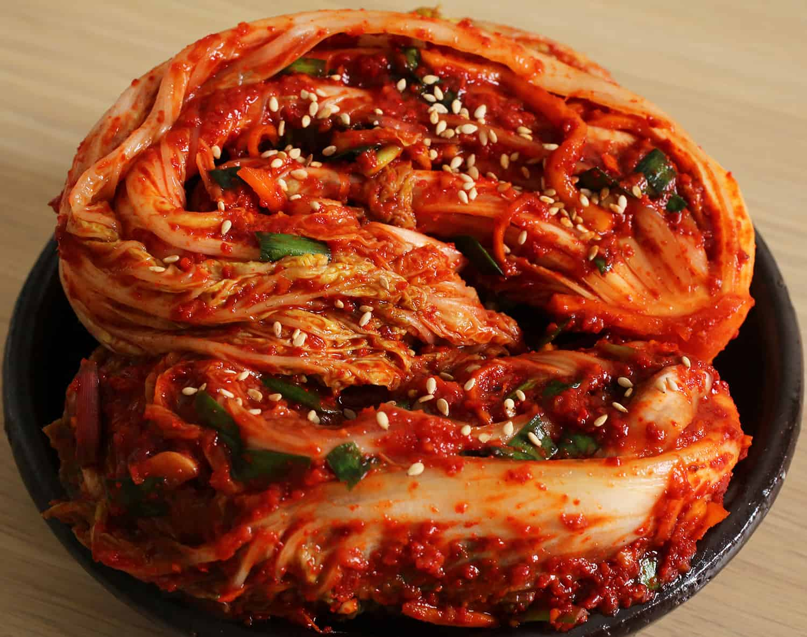

MENU
KIMBAP-made from cooked rice, vegetables, fish, and meat rolled
in gim dried sheets of seaweed and served in bite-sized slices.
Price: Php 210.00
EUMOK/ODENG-processed fish cake made with pured fish and other ingredients.
Price: Php 100.00 for 8pcs
KIMCHI-kind of traditional, slightly spicy korean sauerkraut made from fermented vegetables.
Price: Php 150.00

TTEOKBOKKI-made primarily of chewy rice cakes and fiery, funky gochujang chile paste.
Price: Php 75.00
DAKKOCHI-South Korean street food consisting of small pieces of chicken and scallions grilled on a skewer.
Price: Php 95.00
HOTTEOK-sweet pancake filled with gooey cinnamon sugar and nuts,
accompanied with a light crisp and a pleasant chewiness.
Price: Php 55.00
MANDU-Korean dumplings filled with a different types of savory filling called
“So (소)” and folded in different patterns.
Price: Php 160.00
TWIGIM-Like tempura, twigim is any vegetable or meat that is deep fried in a light, crispy batter.
Price: Php 135.00

TORNADO POTATO-It is a deep fried spiral-cut whole potato on a skewer, similar to a French fry,
brushed with various seasonings such as onion, cheese, or honey.
Price: Php 80.00

GAMJA HOT DOG/TOKKEBI HOT DOG-coated in a batter, deep fried, dusted with sugar and topped with choice condiments.
Price: Php 85.00
DAKGANGJEONG (Koean Fried Chicken)- is a deep-fried crispy chicken dish glazed in a sticky, sweet, and spicy sauce.
Price: Php 264.00
BUNGEOPPANG-A bit like a waffle on the outside, with a tasty filling inside.
a fish-shaped pastry stuffed with sweetened red bean paste.